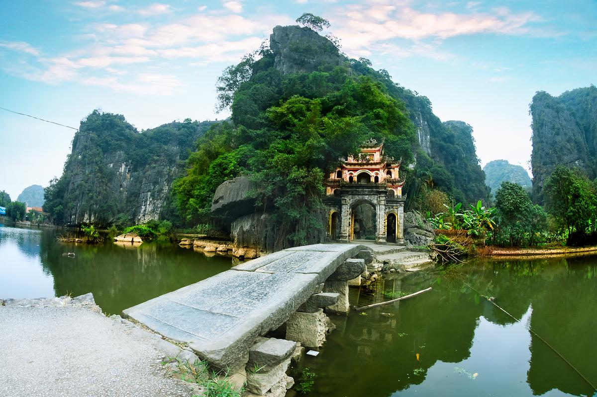
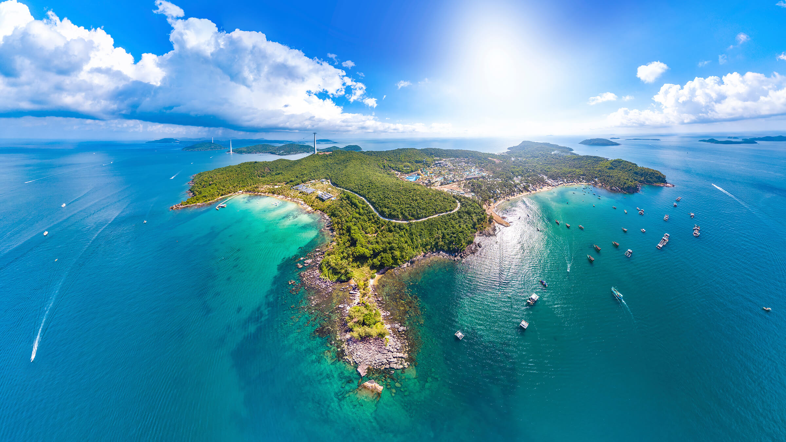

Miền Bắc – Nét Đẹp Hùng Vĩ Và Cổ Kính
1. Hà Giang
Hà Giang là vùng đất nơi cực Bắc của Tổ quốc, nổi tiếng với cao nguyên đá Đồng Văn, cột cờ Lũng Cú và đèo Mã Pí Lèng hùng vĩ. Mỗi mùa trong năm, Hà Giang lại mang một vẻ đẹp riêng, đặc biệt là mùa hoa tam giác mạch rực rỡ.
2. Ninh Bình
Ninh Bình được mệnh danh là “Hạ Long trên cạn” với danh thắng Tràng An, Tam Cốc – Bích Động và chùa Bái Đính. Nơi đây là sự kết hợp hoàn hảo giữa núi non, sông nước và di tích lịch sử.

3. Hà Nội
Thủ đô nghìn năm văn hiến với Hồ Gươm, Văn Miếu Quốc Tử Giám, Lăng Chủ tịch Hồ Chí Minh và 36 phố phường cổ kính. Hà Nội còn nổi tiếng với những món ăn đặc sản như phở, bún chả, cốm làng Vòng.

Miền Trung – Dải Đất Di Sản Và Biển Xanh
1. Huế
Cố đô Huế là nơi lưu giữ nhiều công trình cổ kính như Kinh thành, chùa Thiên Mụ, lăng Tự Đức, lăng Khải Định. Thành phố mang nét trầm mặc, dịu dàng của sông Hương, núi Ngự.
2. Đà Nẵng
Thành phố biển hiện đại bậc nhất miền Trung với những cây cầu nổi tiếng như cầu Rồng, cầu Sông Hàn cùng bãi biển Mỹ Khê tuyệt đẹp. Nơi đây còn gần Ngũ Hành Sơn và bán đảo Sơn Trà.

3. Hội An
Phố cổ Hội An mang vẻ đẹp bình dị, rực rỡ đèn lồng và những ngôi nhà cổ từ thế kỷ 16. Du khách thích thú khi dạo phố, thả đèn hoa đăng trên sông Hoài, hay thưởng thức cao lầu, mì Quảng.
Miền Nam – Sôi Động, Hiện Đại Và Thân Thiện
1. Thành phố Hồ Chí Minh
Trung tâm kinh tế – văn hóa lớn nhất cả nước, nổi bật với Nhà thờ Đức Bà, Dinh Độc Lập, phố đi bộ Nguyễn Huệ và khu chợ Bến Thành nhộn nhịp. Nơi đây còn có nền ẩm thực đa dạng và năng động.

2. Cần Thơ
Cần Thơ được mệnh danh là “Tây Đô” của miền Tây Nam Bộ, nổi tiếng với chợ nổi Cái Răng, bến Ninh Kiều và những khu vườn trái cây trĩu quả.

3. Phú Quốc
Đảo ngọc Phú Quốc là thiên đường nghỉ dưỡng với biển xanh trong vắt, cát trắng mịn, cùng nhiều khu resort cao cấp. Nơi đây còn nổi tiếng với nước mắm truyền thống và hồ tiêu.
Tham khảo thêm tại Wikipedia: Khám Phá Việt Nam